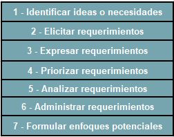

En esta área se evalúa la capacidad de diagnosticar un problema en la operación de una organización, utilizando como estrategias (metodologías) el análisis de factibilidad, así como el análisis, la validación y la documentación de requerimientos a fin de proponer un sistema de información computacional.
En esta subárea se evalúan los siguientes temas:
Durante la fase de planeación del sistema es de suma importancia el entender el por qué un sistema de información debe de ser construído y cómo el equipo de desarrollo deberá construirlo.
Este proceso consta de dos pasos:
Esta etapa incluye los siguientes puntos:
En esta etapa se establecen el COSTO-BENEFICIO del proyecto. La mayoría de las ideas para un nuevo proyecto son externas al departamento de TI y provienen principalmente del departamento de marketing, del departamento de cuentas, ventas, etc.. En esta etapa se desarrolla la petición de sistema, donde se exponen las necesidades del negocio y cómo el nuevo sistema podría generar un valor de negocio. Junto con esos departamentos el departamento de TI conduce un ANÁLISIS DE FACTIBILIDAD, en el cual se analizan aspectos clave del proyecto propuesto.
En este tipo de factibilidad debe de observarse principalmente si el equipo de trabajo maneja bien las tecnologías del proyecto propuesto, o si es la primera vez que se hará un sistema así en el equipo de trabajo, o si existe algún factor que pueda poner en RIESGO la elaboración y buen término del proyecto por parte del equipo de desarrollo.
Implica identificar beneficios y costos mediante análisis costo-beneficio, para ello normalmente se genera una hoja de cálculo con los costos-beneficios en ella.
Los beneficios económicos tienen dos grandes grupos:
Los beneficios tangibles son aquellos que pueden medirse en pesos y con precisión. Un beneficio tangible es por ejemplo, reducir los gastos del personal administrativo, bajar el costos de las transacciones o subir los márgenes de ganancias.
Un beneficio a la organización o empresa, que no pueda ser medido fácilmente monetariamente es un beneficio no tangible, por ejemplo generar competitividad, incrementar la flexibilidad, incrementar la moral de los trabajadores, etc.
Un sistema a su vez puede tener costos:
Es un costo asociado a un sistema que puede ser fácilmente medido en pesos, por ejemplo costos de hardware, sueldos a desarrolladores, contrato de servidores, etc.
Un costo asociado a un proyecto que no puede ser fácilmente medido en pesos, por ejemplo ineficiencia operacional, clientes insatisfecho por mal servicio, etc.
Son costos que se efectúan una sola vez, como por ejemplo cuando se inicia una empresa, iniciación del proyecto, etc.
Son costos que constantemente se dan dentro del proyecto y que normalmente están asociados a su mantenimiento, por ejemplo los pagos por servicios de nube, pagos por hospedajes web, etc.
Son aquellos costos tangibles que se requieren para que el sistema funcione, por ejemplo compra de licencias, costos del staff de soporte técnico, cargos por uso de servidores, etc.
Se lleva a cabo para investigar si el nuevo sistema será utilizado por la empresa y que tan bien será aceptado por los usuarios para trabajar en él.
Se lleva a cabo para saber si la organización a la que se le va a desarrollar el nuevo sistema le será de utilidad para poder resolver algún problema relativo a las operaciones empresariales de dicha organización. Es decir la capacidad del nuevo sistema para resolver problemas del negocio de la empresa.
En la actualidad los nuevos sistemas se generan a partir de la ADMINISTRACIÓN DEL PROCESO DEL NEGOCIO, la cual es una metodología usada por las organizaciones para mejorar continuamente los procesos de negocio end-to-end.
La Administración Del Proceso De Negocio sigue un ciclo donde sistemáticamente se crea, mejora y alteran los procesos de negocios. Los analistas de negocios aplican esto para:
Es un documento que describe las razones para construir un sistema y el valor que el sistema provea a la empresa. Este documento normalmente incluye 5 elementos
En esta subárea se evalúan los siguientes temas:
Las actividades dentro de los requerimientos son las siguientes:

Entender y explorar las ideas del cliente.
Proceso interactivo y de investigación, el cual ocurre cuando se reúne el administrador del proyecto con los clientes y usuarios del futuro sistema. En esta parte se necesita diferenciar el “Yo quiero” del “Yo necesito”. En la primera se tienen características del software que podrían ser necesarias y las segundas son características clave o núcleo. En esta parte se analiza si dichas caracteristicas son posibles y si las expectativas del cliente son realistas, En ete paso se conocen 5 técnicas:Entrevista, JAD, Cuestionarios, Análisis de documentos, Observación.
Esta actividad involucra darles un límite a los requerimientos. En esta parte se buscar representaciones de dichos requerimientos tales como casos de uso, historias de usuario y los story boards.
En metodologías tales como Scrum es de suma importancia hacer la prioridad de acuerdo a las necesidades del cliente. Se deben hacer para ello las siguientes preguntas:
Es la acción de examinar los requerimientos enlistados para asegurarse que son claros, completos y consistentes.